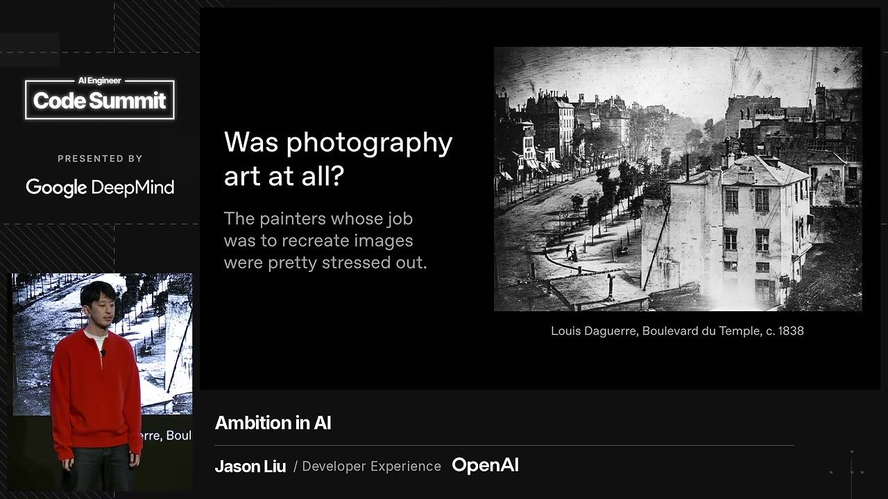
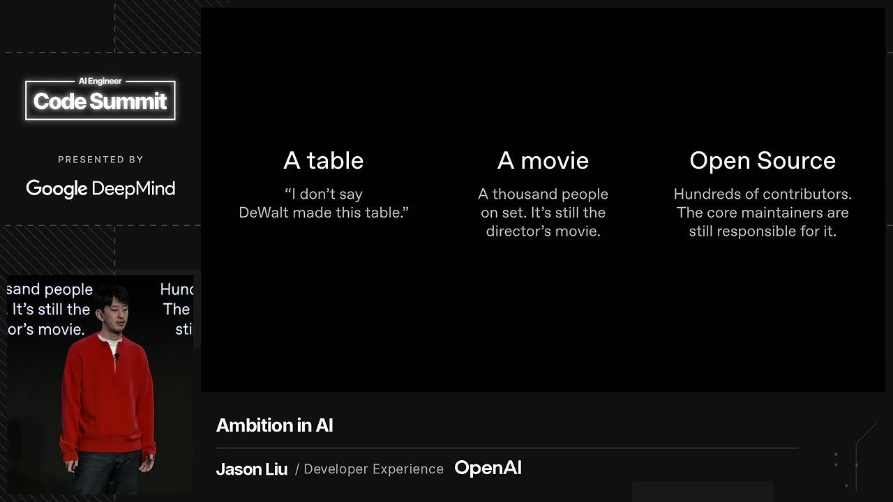
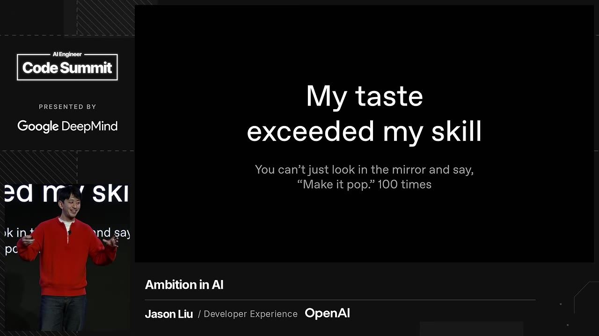
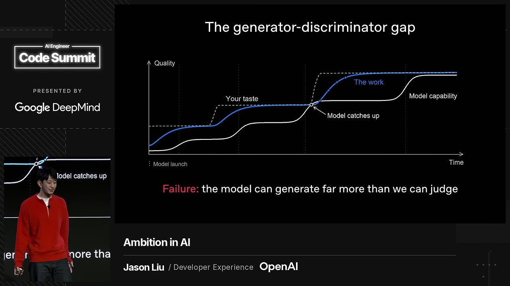
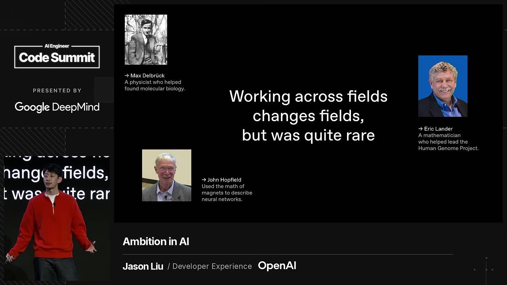

essencial do dia: Mostra, com o exemplo das máquinas de estado implícitas, como um termo técnico preciso melhora o pedido ao modelo mais que um 'deixe melhor'.
Ambição quando executar custa quase nada
Execution Is Free. How Ambitious Are You?
Com execução quase grátis, ambição depende de assumir a autoria, ter vocabulário para dizer o que é bom e usar a IA para voltar a campos que você deixou.
Depois deste talk você consegue descrever três posturas para trabalhar com IA sem produzir slop: autoria, vocabulário de qualidade e curiosidade por outras áreas
Em 3 frases
Jason Liu, da equipe de experiência do desenvolvedor da OpenAI, responde a três medos sobre IA: mais slop (trabalho que parece pronto, mas sem raciocínio), perda do pensamento crítico e substituição de profissionais.
Para cada medo ele propõe uma postura. Assuma a autoria do que você entrega, desenvolva linguagem para descrever o que é bom (o gosto) e use a IA para voltar às áreas que você deixou por causa do software.
O talk é uma reflexão pessoal, cheia de analogias com fotografia, arte e projetos próprios. Quase não há técnica nem dados, e a ambição que ele defende não se mede em tokens gastos.
Antes de ler
- State machine máquina de estados analogia abaixo
- Slop trabalho que parece pronto, sem raciocínio por trás analogia no glossário
- Vibe coding programar descrevendo o resultado e deixando a IA escrever o código analogia no glossário
- Computer use agente que usa a interface do computador analogia no glossário
- Generator-discriminator gap descompasso entre quem gera e quem avalia
- Dogfooding usar o próprio produto internamente analogia no glossário
A câmera e o pintor
Quando a câmera surgiu, pintores que viviam de reproduzir imagens ficaram aflitos. A fotografia virou arte e mudou o mundo das artes. Liu pergunta se você se vê como o pintor, preso a uma habilidade, ou como o artista, para quem pincel, câmera ou código são só meios. Admite que haverá mais slop, mas lembra que o acesso mais amplo vale o custo.


(ampliar imagem)O antídoto do slop é a autoria
Para Liu, o risco real é a autoeliminação, ou seja, virar observador passivo do que a IA produz. Quem faz mil PRs e quem faz mil PRs com cuidado se separam por cuidado e participação ativa. Na prática, isso quer dizer usar o próprio produto, notar o que quebra e decidir se precisa de mais uma rodada. O diretor assina o filme, e os mantenedores respondem pela qualidade do open source.


(ampliar imagem)Gosto é descrever e prever
Liu rejeita a frase de que gosto é o fosso competitivo, porque ela não diz o que é gosto. Sua definição é a capacidade de descrever o que você curte e prever o que os outros vão curtir. Ele conta que na escola de arte seu julgamento superava sua habilidade. Hoje a IA fecha essa distância, mas só quem tem vocabulário consegue pedir melhorias específicas, como no tuíte sobre achar máquinas de estado implícitas no app.


(ampliar imagem)Mais 2 ideias deste talk
Você é o discriminador
Em aprendizado de máquina, um modelo gera saídas e outro as avalia. Se o avaliador for ruim demais ou bom demais, o gerador não aprende. Liu diz que agora o humano faz o papel do avaliador. Quando a saída do modelo alcança o seu gosto, fica difícil melhorar mais. A saída é estudar tipografia, movimento e design para saber de novo como é o bom.


(ampliar imagem)Volte aos campos que você largou
Liu pergunta o que você deixou de lado para fazer software e onde seu julgamento de engenheiro seria útil. Cita um consultor que usou IA e biologia molecular para tratar o câncer do cachorro e um servidor público de Hokkaido que construiu robôs para a fazenda. Ele mesmo usa a IA para bateria, MIDI, impressão 3D e chips. A tese é que as pessoas serão necessárias em mais lugares, não em menos.


(ampliar imagem)State machine (máquina de estados). Uma máquina de estados é como um semáforo, que só pode estar verde, amarelo ou vermelho e troca de cor sempre na mesma ordem.
- Muita coisa num aplicativo passa por fases. Um pedido de compra começa no carrinho, depois fica pago e por fim é enviado.
- State machine (máquina de estados) é o modelo que lista essas fases, chamadas estados, e as mudanças permitidas entre elas, chamadas transições.
- Cada transição depende de um evento. O evento 'pagamento aprovado' leva o pedido de pago para enviado, e uma combinação proibida, como enviado sem pagamento, deixa de existir.
- Em muitos apps essa máquina fica implícita, espalhada em várias flags (variáveis de sim ou não) e condições. Isso abre espaço para estados inválidos, bugs e trabalho repetido.
- No talk, o pedido 'ache as máquinas de estado implícitas no meu app' deu ao modelo um alvo preciso. Nos comentários, pessoas relataram apps cerca de 20% mais rápidos, um exemplo de como o vocabulário certo melhora o pedido.
Ajuda saber antes: Prompt
É uma palestra de motivação de um funcionário da OpenAI, que vende as ferramentas que menciona (Codex app, sites, computer use). Não há dados, estudos nem medições sobre qualidade, slop ou ganho de produtividade. Os exemplos são anedotas escolhidas, e o grupo que 'ganha tempo' com IA para novos hobbies tem um perfil privilegiado. O talk também não trata de custos, riscos de segurança nem de quem perde emprego, e o argumento de que a câmera ampliou as artes se apoia só em analogia.
Teste você mesmo
Responda de cabeça antes de abrir. Lembrar com esforço é o que fixa.
- lembrar Quais são as três posturas que Liu propõe para ter ambição quando a execução é quase grátis?
Ver resposta
Assumir a autoria do trabalho que entrega, desenvolver linguagem para descrever o que é bom (gosto) e ter curiosidade para usar a IA em outras áreas.
- aplicar Você pediu ao modelo uma tela e o resultado ficou feio, mas você não sabe dizer por quê. O que fazer, segundo o talk?
Ver resposta
Estudar o campo (tipografia, espaçamento, movimento), olhar bons exemplos e reaprender a nomear o problema. Com vocabulário preciso, o pedido ao modelo fica específico em vez de 'deixe mais bonito'.
- criticar Que evidência falta ao argumento de que a IA não reduz o pensamento crítico?
Ver resposta
Faltam dados. O talk se apoia só em experiências pessoais de Liu e em analogias com a fotografia. Não há estudo, medição ou grupo de comparação, e o palestrante trabalha na empresa que vende as ferramentas.
Ensinar ao modelo o vocabulário do seu campo
Você precisa de: Claude ou ChatGPT e um repositório ou projeto seu
- Peça ao modelo 'melhore este código' e guarde a resposta como baseline.
- Refaça o pedido com um termo preciso, por exemplo 'ache máquinas de estado implícitas neste código', e compare as respostas.
- Peça ao modelo cinco termos que um especialista usaria para criticar seu projeto e rode um pedido para cada termo.
- Anote quais termos geraram melhorias reais que você aceitou.
Deu certo se: Pelo menos um termo técnico produz uma sugestão melhor do que o pedido genérico, e você consegue explicar por quê.
O que fazer com isso
- Escolha um projeto recente feito com IA e liste o que você verificou à mão antes de entregar, para saber onde está sua autoria.
- Anote cinco termos de um campo vizinho (design, tipografia, performance) e use-os em pedidos ao modelo no lugar de 'deixe mais bonito'.
- Separe uma hora por semana para estudar uma área que você deixou de lado e use a IA como tutora.
Conversa com outros talks
- aprofunda Engenharia de fábrica de software com agentes · Zach Lloyd diz que o gosto humano não se automatiza; Liu define gosto como descrever e prever o que agrada e mostra como treiná-lo.
- Como entregar milhões de linhas escritas por agentes · 24 nov · em comum: Dogfooding, Slop
- Empacotar seu critério de qualidade numa ferramenta de IA · 2 nov · em comum: Slop, Vibe coding
- 2026 em LLMs: três pontos de virada segundo Simon Willison · 17 nov · em comum: Slop, Vibe coding